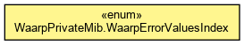

org.waarp.snmp.r66
Enum WaarpPrivateMib.WaarpErrorValuesIndex
java.lang.Object
 java.lang.Enum<WaarpPrivateMib.WaarpErrorValuesIndex>
org.waarp.snmp.r66.WaarpPrivateMib.WaarpErrorValuesIndex
java.lang.Enum<WaarpPrivateMib.WaarpErrorValuesIndex>
org.waarp.snmp.r66.WaarpPrivateMib.WaarpErrorValuesIndex
- All Implemented Interfaces:
- Serializable, Comparable<WaarpPrivateMib.WaarpErrorValuesIndex>
- Enclosing class:
- WaarpPrivateMib
public static enum WaarpPrivateMib.WaarpErrorValuesIndex
- extends Enum<WaarpPrivateMib.WaarpErrorValuesIndex>

Error part
- Author:
- Frederic Bregier
nbStatusConnectionImpossible
public static final WaarpPrivateMib.WaarpErrorValuesIndex nbStatusConnectionImpossible
nbStatusServerOverloaded
public static final WaarpPrivateMib.WaarpErrorValuesIndex nbStatusServerOverloaded
nbStatusBadAuthent
public static final WaarpPrivateMib.WaarpErrorValuesIndex nbStatusBadAuthent
nbStatusExternalOp
public static final WaarpPrivateMib.WaarpErrorValuesIndex nbStatusExternalOp
nbStatusTransferError
public static final WaarpPrivateMib.WaarpErrorValuesIndex nbStatusTransferError
nbStatusMD5Error
public static final WaarpPrivateMib.WaarpErrorValuesIndex nbStatusMD5Error
nbStatusDisconnection
public static final WaarpPrivateMib.WaarpErrorValuesIndex nbStatusDisconnection
nbStatusFinalOp
public static final WaarpPrivateMib.WaarpErrorValuesIndex nbStatusFinalOp
nbStatusUnimplemented
public static final WaarpPrivateMib.WaarpErrorValuesIndex nbStatusUnimplemented
nbStatusInternal
public static final WaarpPrivateMib.WaarpErrorValuesIndex nbStatusInternal
nbStatusWarning
public static final WaarpPrivateMib.WaarpErrorValuesIndex nbStatusWarning
nbStatusQueryAlreadyFinished
public static final WaarpPrivateMib.WaarpErrorValuesIndex nbStatusQueryAlreadyFinished
nbStatusQueryStillRunning
public static final WaarpPrivateMib.WaarpErrorValuesIndex nbStatusQueryStillRunning
nbStatusNotKnownHost
public static final WaarpPrivateMib.WaarpErrorValuesIndex nbStatusNotKnownHost
nbStatusQueryRemotelyUnknown
public static final WaarpPrivateMib.WaarpErrorValuesIndex nbStatusQueryRemotelyUnknown
nbStatusCommandNotFound
public static final WaarpPrivateMib.WaarpErrorValuesIndex nbStatusCommandNotFound
nbStatusPassThroughMode
public static final WaarpPrivateMib.WaarpErrorValuesIndex nbStatusPassThroughMode
nbStatusRemoteShutdown
public static final WaarpPrivateMib.WaarpErrorValuesIndex nbStatusRemoteShutdown
nbStatusShutdown
public static final WaarpPrivateMib.WaarpErrorValuesIndex nbStatusShutdown
nbStatusRemoteError
public static final WaarpPrivateMib.WaarpErrorValuesIndex nbStatusRemoteError
nbStatusStopped
public static final WaarpPrivateMib.WaarpErrorValuesIndex nbStatusStopped
nbStatusCanceled
public static final WaarpPrivateMib.WaarpErrorValuesIndex nbStatusCanceled
nbStatusFileNotFound
public static final WaarpPrivateMib.WaarpErrorValuesIndex nbStatusFileNotFound
nbStatusUnknown
public static final WaarpPrivateMib.WaarpErrorValuesIndex nbStatusUnknown
values
public static WaarpPrivateMib.WaarpErrorValuesIndex[] values()
- Returns an array containing the constants of this enum type, in
the order they are declared. This method may be used to iterate
over the constants as follows:
for (WaarpPrivateMib.WaarpErrorValuesIndex c : WaarpPrivateMib.WaarpErrorValuesIndex.values())
System.out.println(c);
- Returns:
- an array containing the constants of this enum type, in
the order they are declared
valueOf
public static WaarpPrivateMib.WaarpErrorValuesIndex valueOf(String name)
- Returns the enum constant of this type with the specified name.
The string must match exactly an identifier used to declare an
enum constant in this type. (Extraneous whitespace characters are
not permitted.)
- Parameters:
name - the name of the enum constant to be returned.
- Returns:
- the enum constant with the specified name
- Throws:
IllegalArgumentException - if this enum type has no constant
with the specified name
NullPointerException - if the argument is null
getOID
public int getOID()
Copyright © 2009-2012 Waarp. All Rights Reserved.